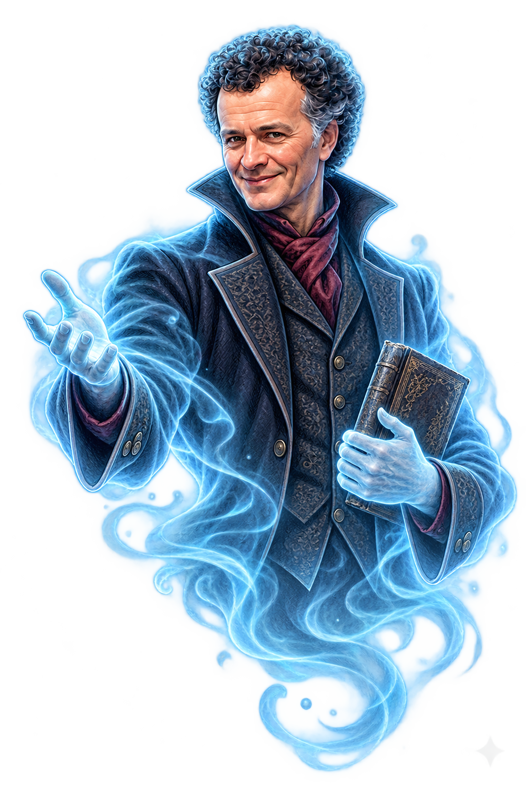

OLEGGIO CASTELLO
Hai scoperto una tappa
La memoria
in cammino
Il municipio di Oleggio Castello: un viaggio tra ieri e oggi.
Lo stesso luogo, due epoche


Nel 1973 era una casa colonica; oggi è sede del municipio. Le fotografie sono riprese da posizioni diverse.

Incontra Guido
Inquadra un dettaglio della sala e premi “Blocca Guido qui”.
La storia di questa tappa
L’enigma di Guido
Escape room a cielo aperto
Ricomponi la frase
In ogni tappa ascolta Guido, risolvi l’enigma e raccogli una parola. Puoi partire da qualsiasi cartello.
Le tappe della demo
3 tappe dimostrative. Il percorso completo è previsto su circa 35 punti; posizioni, accessi e cartelli saranno definiti con il Comune.
Consenti la fotocamera e, se richiesto, il movimento del telefono.